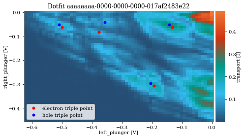

Example charge diagram¶
[12]:
import os
from qcodes import Station, load_or_create_experiment
from qcodes.dataset.plotting import plot_dataset
from qcodes.dataset.data_set import load_by_run_spec
import nanotune as nt
from nanotune.tests.mock_classifier import MockClassifer
from nanotune.tuningstages.chargediagram import ChargeDiagram
from nanotune.tuningstages.settings import DataSettings, SetpointSettings, Classifiers
from nanotune.device.device import Readout, NormalizationConstants
from sim.data_providers import QcodesDataProvider
from sim.qcodes_mocks import MockDoubleQuantumDotInstrument
nt_path = os.path.dirname(os.path.dirname(os.path.abspath(nt.__file__)))
Define databases
[2]:
db_name_original_data2D = "dot_tuning_sequences.db"
db_folder_original_data = os.path.join(nt_path, "data", "tuning")
chargediagram_path = os.path.join(db_folder_original_data, db_name_original_data2D)
db_name_replay = 'qdsim_test.db'
db_folder_replay = os.getcwd()
Create qc.Station
[3]:
station = Station()
qd_mock_instrument = MockDoubleQuantumDotInstrument()
station.add_component(qd_mock_instrument, name="qdmock")
qdsim = qd_mock_instrument.mock_device
Create the data provider
[4]:
charge_state_data = QcodesDataProvider(
input_providers=[qdsim.left_plunger, qdsim.right_plunger],
db_path=chargediagram_path,
exp_name="GB_Newtown_Dev_1_1",
run_id = 19,
)
qd_mock_instrument.drain.set_data_provider(charge_state_data)
[5]:
ds = nt.Dataset(19, db_name_original_data2D, db_folder_original_data)
range_to_sweep = [
(min(ds.data.voltage_x.values), max(ds.data.voltage_x.values)),
(min(ds.data.voltage_y.values), max(ds.data.voltage_y.values)),
]
# range_to_sweep
[6]:
nt.set_database(db_name_replay, db_folder_replay)
exp = load_or_create_experiment("simtest")
[17]:
chadiag = ChargeDiagram(
data_settings=DataSettings(
db_name=db_name_replay,
db_folder=db_folder_replay,
normalization_constants=NormalizationConstants(**ds.normalization_constants),
segment_size=0.2,
),
setpoint_settings=SetpointSettings(
voltage_precision=0.01,
parameters_to_sweep=[qd_mock_instrument.left_plunger, qd_mock_instrument.right_plunger],
safety_voltage_ranges=[(-3, 0)],
ranges_to_sweep=range_to_sweep,
),
readout=Readout(transport=qd_mock_instrument.drain),
classifiers=Classifiers(
singledot=MockClassifer('singledot'),
doubledot=MockClassifer('doubledot'),
dotregime=MockClassifer('dotregime')),
)
[18]:
tuning_result = chadiag.run_stage()
Starting experimental run with id: 2.
Upgrading database; v0 -> v1: : 0it [00:00, ?it/s]
Upgrading database; v1 -> v2: 100%|██████████| 1/1 [00:00<00:00, 175.78it/s]
Upgrading database; v2 -> v3: : 0it [00:00, ?it/s]
Upgrading database; v3 -> v4: : 0it [00:00, ?it/s]
Upgrading database; v4 -> v5: 100%|██████████| 1/1 [00:00<00:00, 56.43it/s]
Upgrading database; v5 -> v6: : 0it [00:00, ?it/s]
Upgrading database; v6 -> v7: 100%|██████████| 1/1 [00:00<00:00, 34.02it/s]
Upgrading database; v7 -> v8: 100%|██████████| 1/1 [00:00<00:00, 71.62it/s]
Upgrading database; v8 -> v9: 100%|██████████| 1/1 [00:00<00:00, 102.07it/s]
Starting experimental run with id: 1.
Starting experimental run with id: 2.
Starting experimental run with id: 3.
Starting experimental run with id: 4.
Starting experimental run with id: 5.
Starting experimental run with id: 6.

chargediagram: Good result measured. Regime: doubledot. Termination reasons: None.
[19]:
tuning_result.success
[19]:
True
[20]:
# Note that a mock classifier was used, which always returns True == good result
tuning_result.ml_result
[20]:
{'dot_segments': {1: {'voltage_ranges': [(-0.622073578595318,
-0.428312955754153),
(-0.451505016722408, -0.236013986013986)],
'predicted_regime': 3},
2: {'voltage_ranges': [(-0.622073578595318, -0.428312955754153),
(-0.225752508361204, 0.0)],
'predicted_regime': 3},
3: {'voltage_ranges': [(-0.418115028236197, -0.224354405395033),
(-0.451505016722408, -0.236013986013986)],
'predicted_regime': 3},
4: {'voltage_ranges': [(-0.418115028236197, -0.224354405395033),
(-0.225752508361204, 0.0)],
'predicted_regime': 3},
5: {'voltage_ranges': [(-0.214156477877077, 0.0),
(-0.451505016722408, -0.236013986013986)],
'predicted_regime': 3},
6: {'voltage_ranges': [(-0.214156477877077, 0.0), (-0.225752508361204, 0.0)],
'predicted_regime': 3}},
'regime': 'doubledot',
'quality': True,
'features': {'transport': {'triple_points': [([0.01446705392538605, None],
[0.010197927517956007, 0.010261477652781958],
[-0.193760622841165, -0.30784432958346],
[-0.203958550359121, -0.297582851930678]),
([0.04583402317648589, None],
[0.02039585503591196, 0.041045910611128],
[-0.377323318164373, -0.082091821222256],
[-0.356927463128461, -0.041045910611128]),
([0.014467053925386079, None],
[0.010197927517956007, 0.010261477652782],
[-0.499698448379846, -0.061568865916692],
[-0.509896375897802, -0.05130738826391]),
([0.014467053925386079, None],
[0.010197927517956007, 0.010261477652782],
[-0.132573057733428, -0.061568865916692],
[-0.142770985251384, -0.05130738826391])]}}}
[21]:
tuning_result.data_ids
[21]:
[2]
[ ]: